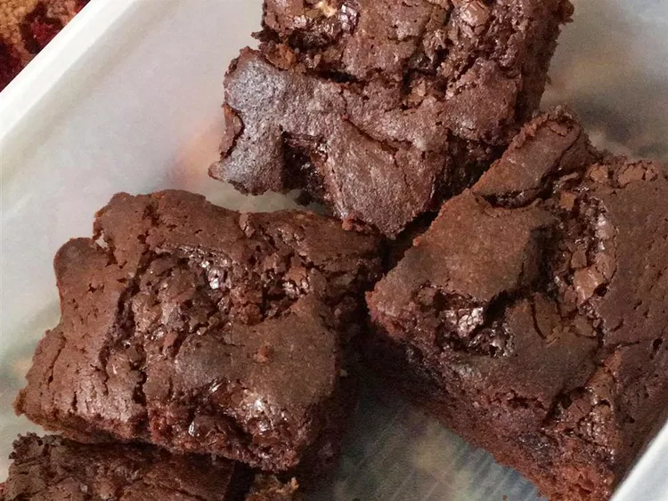

If you like your brownies chewy in the middle and crisp on the outside edges, then this recipe is for you!
Preheat oven to 350 degrees F (175 degrees C). Lightly grease a 9x13-inch baking pan.
Combine white sugar, flour, cocoa, salt, and baking powder in a bowl. Whisk oil, eggs, corn syrup, and vanilla extract in a small bowl. Stir egg mixture into flour mixture; fold in walnuts. Spread into prepared baking pan.
Bake in preheated oven until a toothpick inserted near the center comes out clean, about 30 minutes.
Combine confectioner's sugar and water in a small bowl to make a glaze; drizzle over warm brownies.